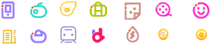
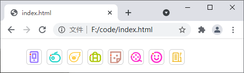

CSS精灵图（Sprite）
当用户访问一个网站时，浏览器会向服务器发送一系列请求，比如说网页上的每张图像都需要经过一次请求才能最终展示给用户。然而，一个网页中往往包含大量的图像资源（例如在页面中展示的图片、网页的背景图像以及一些装饰性的图像等），这就会导致浏览器频繁的请求服务器，大大降低网页的加载速度。为了有效的减少请求服务器的次数，提高页面加载的速度，就出现了 CSS Sprites 技术，也被称为精灵技术。
简单来讲，精灵技术就是一种处理网页背景图像的方式，它需要将一个页面中涉及到的所有或一部分较小的背景图像合并到一张较大的图片中，然后再将这个图片应用到网页种。通常情况下，我们只是将背景图像中那些较小的、零碎的图像集中到一个大的图像中，这个较大的图像被称为精灵图（也被称为雪碧图），如下图所示就是淘宝网上应用的一个精灵图：
精灵图的使用也非常简单，只需要借助 background 或者 background-position 属性来定位背景图像的位置即可。下面以上图所示的精灵图为例，来演示一下精灵图的使用：
简单来说，精灵图就是一个大的背景图，您只需要使用 background-position 来移动背景图，从而只显示背景图的一部分。目前为止，精灵图发展的已经非常成熟，阿里巴巴、百度、谷歌、京东、淘宝等大型网站中都可以看到精灵图的影子，使用精灵图可以减少图片的体积，也可以显著的减少对服务器的请求次数，提高网页的加载速度。当然，使用精灵图也不是没有弊端，比如：
简单来讲，精灵技术就是一种处理网页背景图像的方式，它需要将一个页面中涉及到的所有或一部分较小的背景图像合并到一张较大的图片中，然后再将这个图片应用到网页种。通常情况下，我们只是将背景图像中那些较小的、零碎的图像集中到一个大的图像中，这个较大的图像被称为精灵图（也被称为雪碧图），如下图所示就是淘宝网上应用的一个精灵图：

图：淘宝网中的精灵图
图：淘宝网中的精灵图
精灵图的使用也非常简单，只需要借助 background 或者 background-position 属性来定位背景图像的位置即可。下面以上图所示的精灵图为例，来演示一下精灵图的使用：
<!DOCTYPE html>
<html>
<head>
<style>
ul li {
float: left;
width: 30px;
height: 30px;
list-style: none;
margin: 5px;
border: 1px solid #CCC;
border-radius: 6px;
}
ul li:nth-child(1){
background: url(./sprite.png) no-repeat 4px 1px;
}
ul li:nth-child(2){
background: url(./sprite.png) no-repeat -38px 1px;
}
ul li:nth-child(3){
background: url(./sprite.png) no-repeat -81px 3px;
}
ul li:nth-child(4){
background: url(./sprite.png) no-repeat -123px 2px;
}
ul li:nth-child(5){
background: url(./sprite.png) no-repeat -171px 0px;
}
ul li:nth-child(6){
background: url(./sprite.png) no-repeat -214px 2px;
}
ul li:nth-child(7){
background: url(./sprite.png) no-repeat -267px 1px;
}
ul li:nth-child(8){
background: url(./sprite.png) no-repeat 2px -36px;
}
</style>
</head>
<body>
<ul>
<li></li><li></li>
<li></li><li></li>
<li></li><li></li>
<li></li><li></li>
</ul>
</body>
</html>
运行结果如下：

图：精灵图演示
图：精灵图演示
简单来说，精灵图就是一个大的背景图，您只需要使用 background-position 来移动背景图，从而只显示背景图的一部分。目前为止，精灵图发展的已经非常成熟，阿里巴巴、百度、谷歌、京东、淘宝等大型网站中都可以看到精灵图的影子，使用精灵图可以减少图片的体积，也可以显著的减少对服务器的请求次数，提高网页的加载速度。当然，使用精灵图也不是没有弊端，比如：
- 在图片合并的时候，需要把多张图片有序的、合理的合并成一张图片，每个小图之间需要预留足够的空间；
- 在宽屏或者高分辨率的屏幕下来自适应页面宽度时，如果图片不够宽，会出现背景断裂；
- 精灵图在维护的时候比较麻烦，如果页面背景有少许改动，就需要修改整个精灵图。
关注公众号「站长严长生」，在手机上阅读所有教程，随时随地都能学习。内含一款搜索神器，免费下载全网书籍和视频。

微信扫码关注公众号